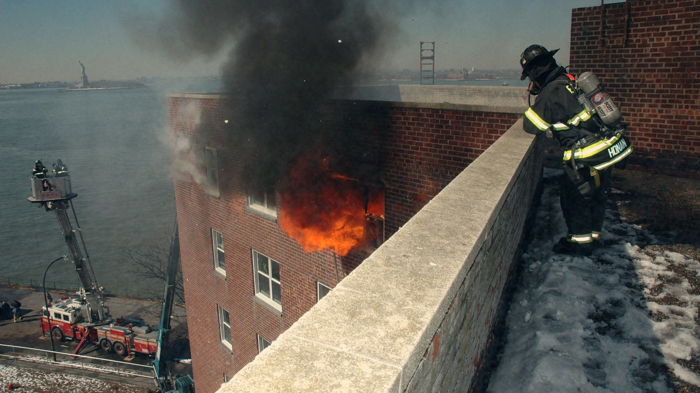
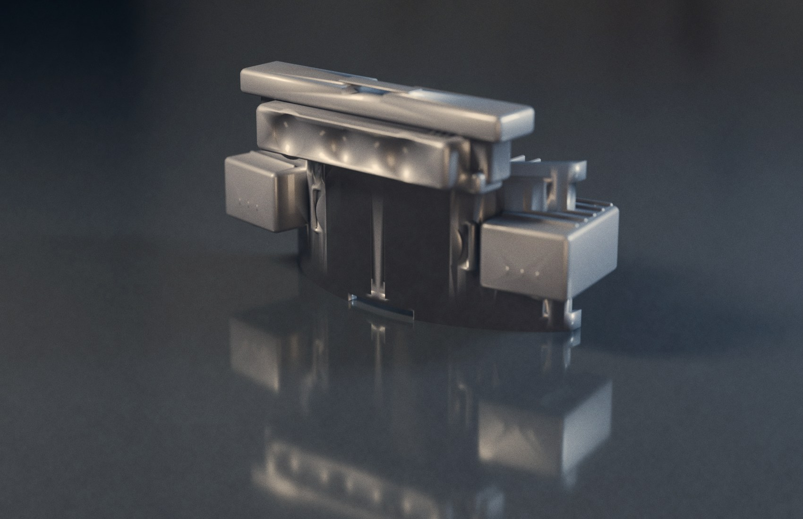
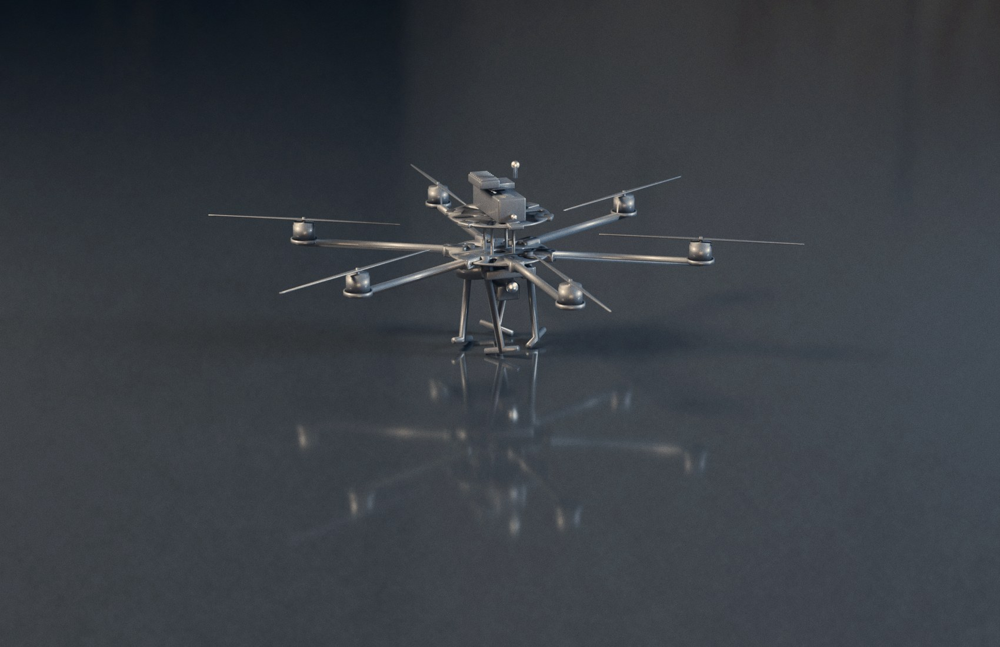
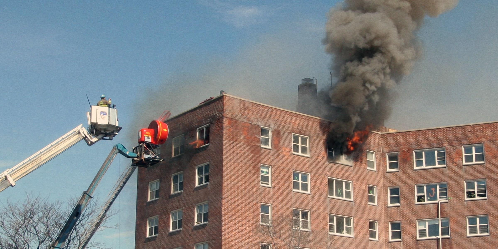
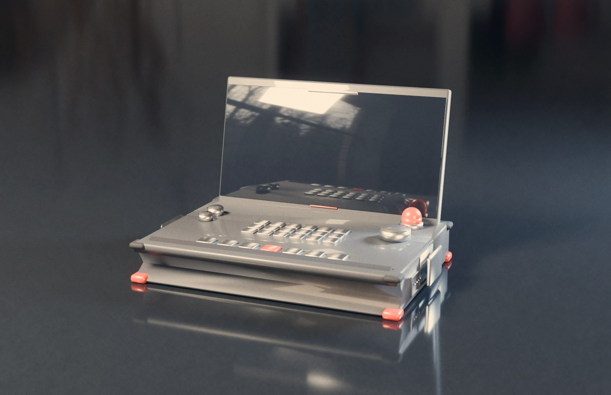
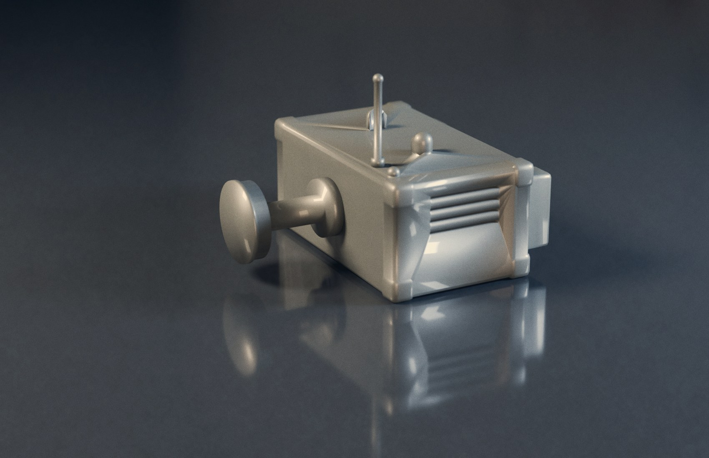
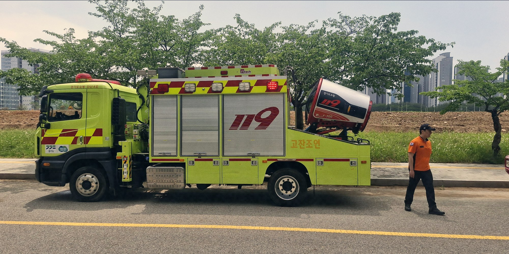
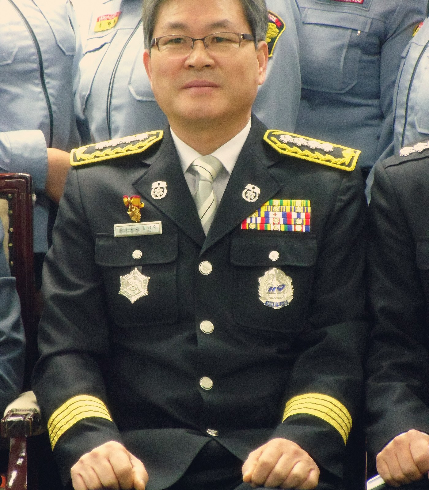

소방 현장 지휘 운영체제
드론 · 스마트 고글 · 현장 IoT · 지휘 콕핏을
하나의 실시간 망으로 묶습니다.
화재 현장에서 가장 위험한 것은 불이 아니라 모름입니다.
FRIZE는 그 모름을 보임으로, 늦음을 즉시로 바꿉니다.
드론·고글 스캔을 융합해 건물 내부를 실시간 3D 표면으로 재구성합니다. 탐사가 진행될수록 화면이 채워집니다.
비전 AI가 영상을 장면 단위로 이해해 생존자·화점·위험을 '왜'와 함께 자동 분류합니다.
목표와 대원을 지정하면, 대원이 움직일 때마다 경로를 재계산해 고글 바닥에 화살표로 안내합니다.
모든 명령은 생명 직결 검문을 통과하고, 차단에는 사람이 읽는 이유가 붙습니다.

열화상과 저조도 카메라로 연기를 뚫고, 시야 위에 AR 정보를 겹칩니다. UWB·위성 측위로 실내외 위치를 잡고, 가스 4종을 실시간 감시합니다.

대원보다 먼저 진입해 연기 속을 LiDAR로 훑습니다. 여러 대가 구역을 나눠 자율 비행하며, UWB 측위 비콘을 투하해 실내 측위망을 구성합니다.

드론이 만든 디지털 트윈, AI가 찾은 생존자, 고글에 그려지는 길.
지휘관은 한 화면에서 현장 전체를 읽습니다.

현장 지휘차의 큰 화면과 전용 물리 콘솔. 화면의 모든 조작이 물리 버튼·키보드와 1:1로 대응하며, 최상위에 물리 E-STOP이 있습니다.

대원을 위험한 곳에 보내지 않고 지휘소에서 배연구·밸브를 원격 개폐합니다. 원격 가스 차단과 차단지점 AR 표시를 지원합니다.
BY THE NUMBERS
출동에서 구조까지, FRIZE는 지휘관이 '무엇을·누구에게'만 정하게 합니다.
상황인식·경로·통신·안전은 시스템이 처리합니다.
우리는 현장의 '모름'을 없애기 위해 존재합니다. 지휘관이 상상으로 결정하지 않고, 대원이 연기 속에서 혼자가 아니도록.
지금의 현장은 무전 음성과 종이 도면, 그리고 사람의 기억에 의존합니다. 지휘관은 건물 밖에서 내부를 상상하고, 대원은 짙은 연기 속에서 방향 감각을 잃습니다.
이 네 가지 공백 — 시야, 길, 공유, 위험 — 은 곧 골든타임의 손실이자 대원 안전의 위협입니다.
드론·고글·장비 전원 ON. 별도 조작 없이 지휘 콕핏과 자동 페어링.
드론들이 층·구역을 나눠 자율 비행. 건물 모형이 복도→방 순서로 채워집니다.
드론 카메라가 비반응 인원을 포착. 위치·신뢰도·근거가 표시됩니다.
지휘관이 생존자와 대원을 지정. 고글에 바닥을 따라 화살표가 그려집니다.
공기 잔압 임계 도달. 시스템이 즉시 후퇴 경로를 띄웁니다.
대원이 생존자에 도착하면 안내가 종료되고, 대피 경로가 다시 그려집니다.
FRIZE는 9개 기능 도메인으로 구성됩니다. 모든 구성요소는 단일 실시간 메시지 망 위에서 동작하며, 콕핏은 상태를 통합하고 명령을 안전 검문 후 각 장비로 중계합니다.
모든 자동 판단에는 이유가 붙는다. AI의 분류도, 안전장치의 거부도 '왜'를 말합니다.
생명을 구하는 명령은 항상 즉시 통과한다. 후퇴·복귀·대피는 어떤 경우에도 막히지 않습니다.
통신 단절을 정상으로 가정한다. 망이 끊겨도 장비는 임무를 잇고, 복구되면 자동 재합류합니다.
훈련이 곧 실전이다. 화면·물리 콘솔·키보드가 완전히 같은 동작을 합니다.

고글·드론·IoT 장비는 전원만 넣으면 지휘 콕핏과 자동 페어링되어 능력을 신고합니다. 설정도, 메뉴도 없습니다.

우리는 청주에서, 현장 대원과 지휘관이 더 안전하게 더 빨리 결정하도록 만드는 안전 기술 회사입니다.
제품은 회의실이 아니라 연기 속에서 검증됩니다.
자동 판단과 차단은 늘 근거를 남깁니다.
속도보다 생명. 모든 결정 위에 후퇴와 비상 정지가 있습니다.
하드웨어부터 펌웨어, AI, 콕핏까지.
연기 속에서 작동하는 제품을 만든다는 것은, 타협 없이 끝까지 만든다는 뜻입니다.
소방서 · 지자체 · 기관 대상 현장 데모와 기술 브리핑을 제공합니다.